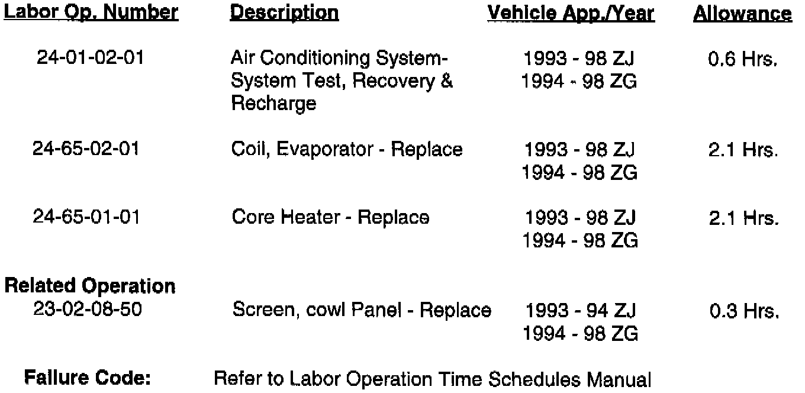

Heater A/C Housing - Service: Overview
NO: 24-02-98GROUP: Air Conditioning
DATE: Mar 13, 1998
SUBJECT:
Heater A/C Housing, Service
MODELS:
1993 - 1998 (ZJ) Grand Cherokee, Grand Wagoneer
1994 - 1998 (ZG) Grand Cherokee (International Markets)
DISCUSSION:

The service manual procedures to service the heater A/C housing, evaporator or heater core have been revised, based on feedback from our training and field personnel as well as dealership technicians. The new procedure is simpler and more efficient than the current service manual procedure. The revised service manual procedure is included and should - be used starting immediately. Listed are the labor operation numbers and times that will be affected by this revision.
NOTE:
THE REVISED LABOR OPERATION TIMES WILL BE EFFECTIVE ON MARCH 16, 1998.